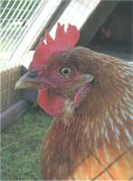

Most people start with day-old chicks purchased in the spring from a local farm store or mail-order catalog. But mail orders usually require a minimum shipment of about 25 chicks (so the chicks can keep each other warm en route). If you just want three or four hens for the mini-coop, combine your order with some friends' orders to meet the minimum, or find a farm-supply store that will order exactly what you want when they place their orders. We don't recommend roosters for backyard beginners - they are loud and aggressive, and the hens will lay better without them. When you order your chicks, specify that you want all females.
Before the chicks arrive, set up a "brooder" - a box (a plastic storage box is a good choice) with a heat lamp hanging over it. You can buy a lamp at the farm store, or for just a few chicks you can use a regular 75- or 100-watt bulb. You'll need wood shavings, straw or dry leaves for bedding, a waterer and feeder, and some chick starter feed.
Adjust the heat lamp's height so the chicks can sleep under it comfortably, without trying to huddle too closely together (which signals that they are chilly and the lamp should be moved closer to them). As the chicks' feathers grow in, gradually raise the lamp. Change their bedding often, and keep their feeder and waterer clean and filled.
When nighttime temperatures remain above 50 degrees, your chickens can be moved to their coop outside. MOTHER'S mini-coop is designed to keep your hens safe from predators, while allowing them access to fresh "pasture." But it is still a good idea to close the coop door every night. All kinds of critters like to dine on poultry, including raccoons, skunks, opossums, weasels, foxes, coyotes, dogs and feral cats. In the daytime, hawks might be a problem.
The young hens (called pullets) will start laying eggs when they are about 20 to 24 weeks old, and they will lay five to six eggs a week. This means four hens will give you nearly two dozen eggs a week. As daylight hours dwindle in the fall, production will decline and the birds will molt. In the spring, they will grow new feathers and increase their laying rate. Each year, expect their annual egg production to drop by about 20 percent. (The upside: Their flavor as stewing chickens will increase!)
Chickens love to take dust baths, and the dust helps prevent parasites on their feathers and skin. If you let your birds run free part of the time, they will probably find a good dusting spot on their own. You can give them some help by placing a deep boxful of dry, loose dirt where it won't get rained on, but near their pen. If you keep them in a mini-coop all the time, place the dust bathtub in the coop once a week or so. Or, if you leave the bottom of your portable coop open (no wire mesh), then you can just roll the coop over a dusting area of your choice.
For more detailed information on raising chickens, check out The Chicken and Egg page.
|
 STEVE MAXWELL All-female flocks are recommended for backyard beginners. Roosters are loud and agressive, and the hens will lay better without them. |
|
|